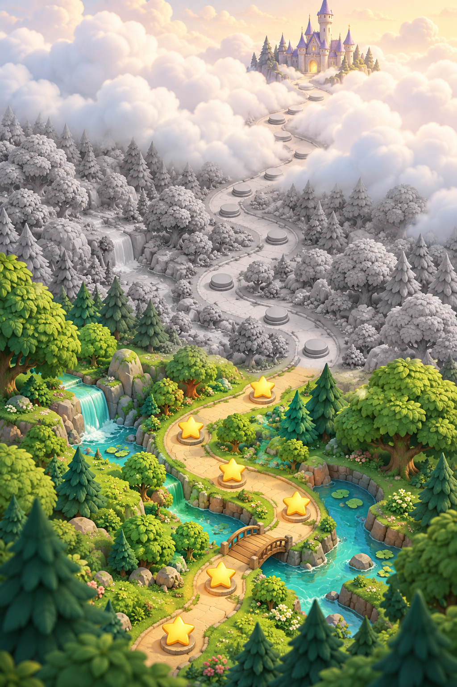
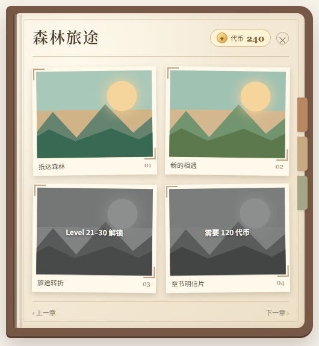

抵达 · 建立地点
给玩家一个能辨认主题的入口地标、主色和道路方向。第一张要在小尺寸下也能认出“到了哪里”。
以当前单页四图草图为容器，结合 TileScape 的章节主题和路径概念图，把“抵达、地标、变化、终点”整理成可执行的逐章美术需求。

沿用已确认的半本书单页结构，右侧页签只表现装帧，不承载具体文字与导航语义。

主题名居页首，右上预留代币区域；同一页 2×2 排四张 4:3 图片，页脚只留上一章/下一章，不放进度数和页码。
未解锁：原图置灰，覆上“Level n–m”或“需要 n 代币”；已解锁：完整彩色。题名和解锁文字独立于插画，避免多语言重出图。
地图展示玩家正在走的路，手册保留这段路最值得回看的四个瞬间。照片不机械截取地图，也不把尚未揭示的区域提前剧透。
半本书封皮、纸页、左书脊、相框和角贴、无字页签、关闭及翻章、代币图标/余额底板、灰度与文字层，跨章复用。
四张图按体验功能分工；解锁关卡与代币价格由策划配置，不能直接按 25% / 50% / 75% 均分关数。
给玩家一个能辨认主题的入口地标、主色和道路方向。第一张要在小尺寸下也能认出“到了哪里”。
从路径上挑一处可复现的桥、河、建筑或角色相遇，让地图与收藏图形成对应。
用云层退去、星光点亮或场景前后变化表达“旅程真的前进了”，但避免泄露未开放区域细节。
终点地标与完整色彩构成章节记忆点。是否复用既有明信片、何时解锁仍待确认。
关卡范围来自当前章节可读配置；中文主题名和每张图的场景内容是提案。切换章节可看四张图的构图方向。
数量以当前六章配置计算；条件文案、关卡与币价均不烘焙在图片中。
6 章 × 4 张 4:3 原画。每章四张形成连续旅程，复用角色、地标、道具与光照方向。
半本书单页底板、四格相框、灰度层、可变条件文案、代币区、无字页签及左右翻章。
每章一套色板、纹样和目录封面。封面优先从四图派生；目前 Gallery 封面图多为同场景换色，不宜直接定为主题内容。
| 配置章节 | 范围 | 01 抵达 | 02 沿途 | 03 变化 | 04 收束 |
|---|---|---|---|---|---|
| Forest | 1–50 | 森林入口 | 溪流木桥 | 星光与云开 | 终点城堡 |
| Ocean | 51–100 | 海湾入口 | 潮间地标 | 浪线后的新区域 | 海岸全景 |
| Candy | 101–200 | 糖果街口 | 甜点地标 | 色彩被点亮 | 糖果城远景 |
| Desert | 201–300 | 沙丘入口 | 绿洲线索 | 风沙退去 | 遗迹终点 |
| Ice | 301–400 | 冰原入口 | 冰桥地标 | 冰雾消散 | 极地远景 |
| Garden | 401–500 | 花园门廊 | 花架与水景 | 花期变化 | 花园全景 |
这些问题影响原画数量、画面内容或状态资产，先确认再批量生产。
当前配置首章仍为 Forest 1–50；20+30 是设计方案。若新增独立手册章，六章 24 图需重估。
每张采用关卡区间还是代币条件？代币是否消耗？草图数字只供排版，不是定价。
是否复用既有章节明信片、是否章末必得、是否另有代币入口，三者需要统一。
现只核对主题与关卡范围；其余场景提案需逐章比对实际地图、角色与剧情，确定可画地标。
D:\TileScape\Assets\Module\HomeHub\HomeScene\Config\Chapter\Data\chapter.json~（作者配置可读备份，未以运行时 bytes 复核）。路径图：TS 前期任务设计演示及同目录的 TS前期任务.assets/outputs/assets/map-concept.png（概念图，非游戏实拍）。书页布局：旅行手册方案与用户本轮确认的草图。当前 Gallery 主题封面是同一糖果场景的换色图，不用作六主题场景的证据。无 Unity、目标机或在线资源验证。